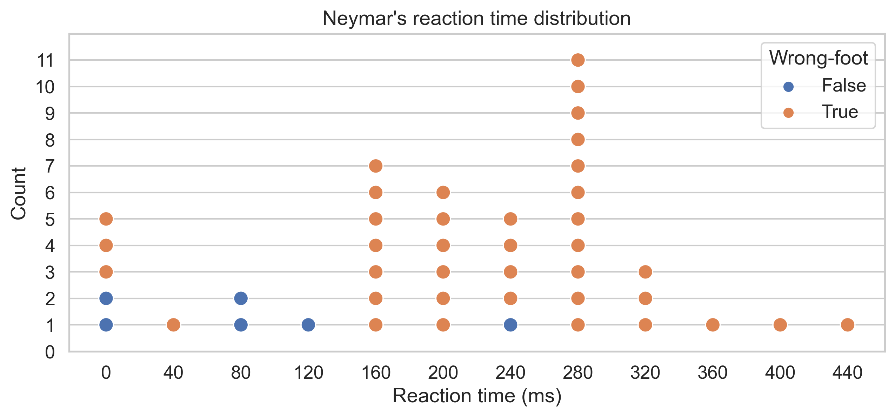

The game below is a penalty simulator where you can
measure your reaction time between the moment when the
goalkeeper begins to dive to one side and the moment
when you choose a side to shoot the ball. The times are
reported just below the game, on a chart which is
updated at each iteration.
The controls to play the game are simple. You can either
click on the left, space or right buttons if you play on
a smartphone (not recommended) or you can use your
keyboard :
> A, Q or LEFT ARROW to shoot on the left
> P or RIGHT ARROW to shoot on the right
> SPACE to move on to the next shot

Below is the graph with a new point for each shot you took. If you have a sufficient amount of shots, you should be able to see a separation between an area where you have half "wrong-foot" half "right-foot" and an area where almost all your shots are "wrong-foot". You can then estimate the minimum time you need between the moment the goalkeeper gives information and the moment you take the shot.
Below is the data of Neymar's penalties, so you can compare your results with his :

Source
code
- GreatTommy